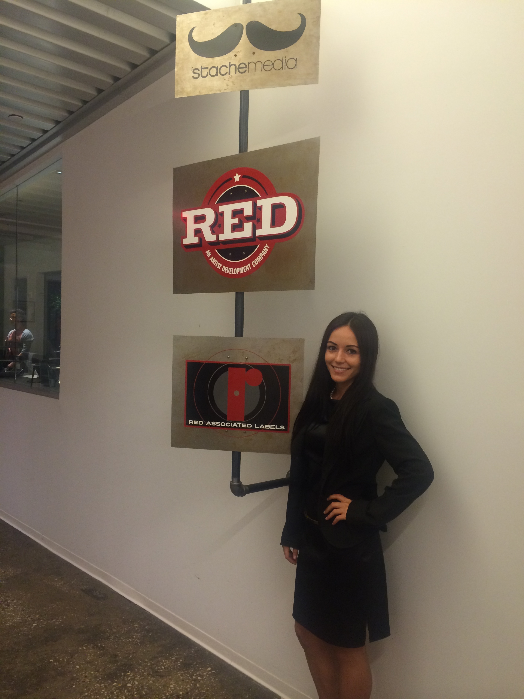

I am enthusiastic about delivering creative talent to the interests of the right audience. I apply my ambitions to every situation, and am always actively finding ways to conquer the next challenge. My experience during my time as an undergraduate at the University of Florida has focused on several internships in the music business. My work experience includes a publicity internship at Columbia Records in the summer of 2013 in New York City and RED Distribution in spring 2014. I also assisted in the start-up of the University of Florida’s first record, Swamp Records. My duties at Columbia Records as a Publicity Intern included compiling press clippings and press packets on various artists, arranging phone conferences between members of the press and artists, mass mailings and press releases.
As an intern with RED Distribution, I focused my efforts on creating artist awareness using promo tools and online marketing. In addition, I coordinated album reviews for my assigned artists with RED featured in print in The Alligator and The Odyssey, as well as continuous communication with WRUF-FM for radio promotion. As the Assistant Head Director for Swamp Records, I designed a plan for a music showcase and an album release event. The purpose of initiating a student-run record label is to bridge the gap between Gainesville and the University music scenes. Recently, I have developed a strong passion for journalism. As a Staff Writer for The EDM Network at EDM.com, I write articles on a daily basis pertaining to electronic music, industry trends and breaking news. I also conduct in-person interviews with electronic music's top artists, like David Guetta, Oliver Heldens, Jody Wisternoff and many more. Other online publications that showcase my work include Miami After Dark and Joonbug.com. I will be graduating from the University of Florida with a Bachelor of Science degree in Telecommunications in December 2014. In my personal time, an active life is very important to me. I enjoy cycling and boxing on a daily basis. Nutrition and cooking are other personal hobbies. Some interesting facts about me are that I’m left handed, I was born on Christmas day, and I lived twenty-one years before I saw snow for the first time.